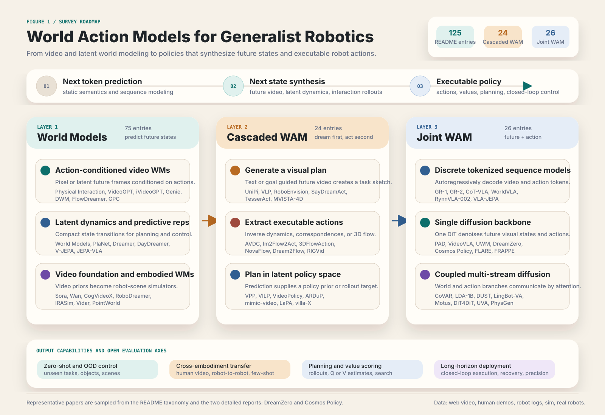

VLA models ground semantic priors into actions
RT-2, OpenVLA, π0 and related systems demonstrate that pretrained vision-language representations can support language-conditioned robot control.
from next token prediction to next state synthesis
We present a systematic survey of World Action Models (WAMs), a paradigm that couples predictive state modeling with action generation for generalist robotics. We clarify terminology, organize architectures, analyze data sources, and identify evaluation gaps.
p(a | o, l)
Generates actions directly from observations and language; semantic generalization is strong, but physical futures remain implicit.
p(o' | o, a)
Predicts the post-action environment state; it can imagine futures, but does not necessarily output a policy.
p(o', a | o, l)
Couples future-state modeling with action generation to form a predictive policy for robot control.
paper thesis
Vision-Language-Action models have achieved strong semantic generalization, but standard observation-to-action learning does not explicitly model how the world evolves under intervention. WAMs address this gap by making future-state prediction part of the policy learning problem.
RT-2, OpenVLA, π0 and related systems demonstrate that pretrained vision-language representations can support language-conditioned robot control.
Long-horizon manipulation, contact-rich interaction, and cross-embodiment transfer require anticipating the physical consequences of actions.
We define WAMs by two criteria: predictive state modeling and coupled action generation. Actions must be aligned with the anticipated future state representation.
visual overview
We use these three figures to make the scope of WAMs explicit: the architectural taxonomy of current methods, the organization of the survey, and the formal boundary between VLA, world models, and WAMs.
Figure 1 · Temporal evolution and taxonomy
The taxonomy separates methods that decouple world modeling and execution from methods that co-optimize future-state prediction and action generation within a shared representation space.

Figure 2 · Comprehensive roadmap
The roadmap shows how VLA and world-model foundations lead into WAM architectures, followed by the data sources and evaluation protocols needed to assess whether predictive futures remain useful for control.
Figure 3 · Conceptual definition
This figure contrasts VLA models, world models, and WAMs through their input-output formulations, while distinguishing WAMs from video policies and video action models.
p(a | o, l)
Observation and language map directly to action.
p(o' | o, a)
Action-conditioned future state prediction.
p(o', a | o, l)
Future state prediction and executable action are coupled.
architecture taxonomy
We divide WAM methods into Cascaded and Joint families, then further organize them by generation modality, conditioning mechanism, and action decoding strategy.
future plan -> action
The world model first generates an anticipated future; the action module then produces controls through inverse dynamics, geometric extraction, or latent policy conditioning.
future + action
Future states and actions are co-trained in a single-stream or multi-stream model. Actions become internal variables of prediction rather than add-on decoders after vision.
training data
We organize training data into four source types. They complement one another in action annotation, physical realism, scale, cross-embodiment generalization, and modal richness.
High-quality robot trajectories support executable action learning, but are expensive to collect and constrained by embodiment.
Portable human demonstrations connect real environments with robot execution and add scene diversity beyond laboratory data.
Simulation provides privileged signals such as 3D structure, collisions, depth, normals, and poses for learning spatial and physical dynamics.
Action labels are weak, but large-scale object interaction, material change, and first-person manipulation provide transferable world knowledge for WAMs.
evaluation
A WAM is both a predictive simulator and an embodied controller, so it cannot be judged by video-generation metrics or task success alone.
PSNR, SSIM, LPIPS, DreamSim, DINO, and FVD measure visual quality, perceptual consistency, and distribution-level video realism.
VideoPhy, PhyGenBench, WorldModelBench, Physics-IQ, and related benchmarks focus on object continuity, physical rules, and trajectory plausibility.
The key question is whether generated futures can be converted by inverse dynamics or policies into real executable actions, not merely plausible videos.
Benchmarks span general manipulation, humanoids, mobile manipulation, contact-rich tasks, and real-device evaluation.
representative systems
DreamZero and Cosmos Policy both follow a continuous-diffusion path, turning video foundation models into policy systems that handle future-state generation and action prediction together.

NVIDIA · 2602.15922
DreamZero adapts a pretrained video diffusion model into a WAM that can generate future video and actions jointly, emphasizing zero-shot policies, cross-embodiment transfer, and action-free video priors.

NVIDIA / Stanford · 2601.16163
Cosmos Policy fine-tunes pretrained video models into visuomotor policies, organizing planning, action prediction, and value functions through a shared latent interface for closed-loop control.
related literature
We maintain related papers, project pages, code links, and reading reports by research direction, covering action-conditioned world models, embodied world models, Cascaded WAMs, and Joint WAMs for method-level comparison.
open challenges
These issues will determine whether WAMs can move from predicting world states toward reliable, deployable generalist robot policies.
Systematic comparisons under matched scale, data, and protocols are still missing.
RGB alone cannot capture contact force, touch, sound, and material deformation.
The optimal ratio among human video, simulation, and robot data remains unclear.
Long rollouts introduce world-prediction drift and accumulated action errors.
Video diffusion and autoregressive generation still struggle to meet closed-loop control rates.
Unified protocols are needed for physical correctness, causal grounding, and deployment safety.